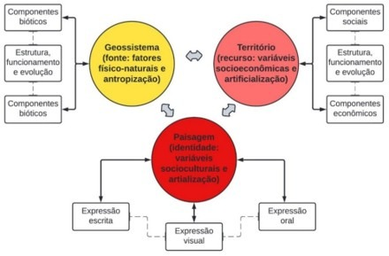
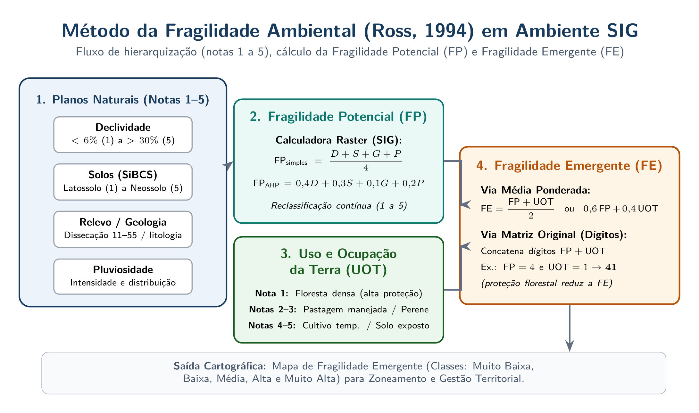
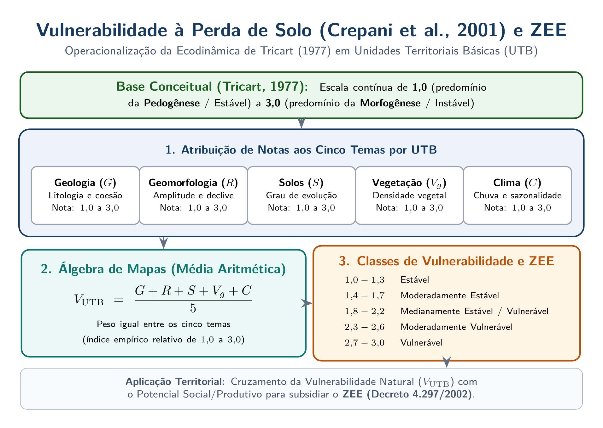
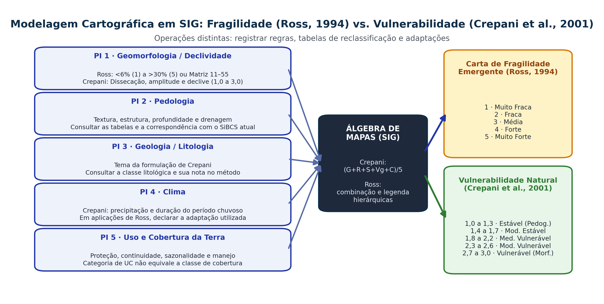

Análise Ambiental · Aula 9.1
Produto: duas interpretações da mesma área, com regras e limites declarados.
Em uma microbacia, relevo, solo, vegetação, água e práticas sociais interagem por fluxos de energia e matéria.
O recorte depende da pergunta: a vertente permite estudar transferências; a bacia inclui rotas até o canal; o território evidencia decisões de acesso, manejo e proteção.
Sotchava: geossistemas são sistemas naturais espacializados, abertos e hierarquizados. A ação humana modifica sua dinâmica; a unidade de estudo precisa ser justificada.
| Conjunto | Unidades da proposta de Bertrand (1968) |
|---|---|
| Escalas superiores | Zona, domínio e região natural |
| Escalas inferiores | Geossistema, geofácies e geótopo |
O geossistema articula potencial ecológico, exploração biológica e ação antrópica. Não equivale automaticamente a tamanho de pixel ou limite administrativo.
O GTP articula geossistema, território e paisagem: funcionamento biofísico, apropriação social e percepção.

| Meio | Relação predominante | Pergunta de campo |
|---|---|---|
| Estável | Pedogênese com menor atividade morfogenética | Perfil e cobertura estão conservados? |
| Intergrade | Interferência entre pedogênese e morfogênese | Quais processos coexistem? |
| Fortemente instável | Predomínio da morfogênese | Há remoção, incisão ou movimentos ativos? |
Vegetação aberta ou sazonal não demonstra sozinha instabilidade. Interpretar a Caatinga com sua sazonalidade, material e formas de uso.
Para sair da classificação ecodinâmica e chegar ao planejamento territorial (organização ou reorganização do espaço), Tricart (1977) estrutura quatro etapas sequenciais:
| Tipo de região | Característica e papel no ordenamento territorial |
|---|---|
| Regiões de produção | Permitem aproveitamento técnico e econômico satisfatório sem degradação severa, sob manejo adequado |
| Regiões marginais | Reorganização tecnicamente possível, porém economicamente inviável ou de baixíssimo retorno |
| Regiões compostas | Mosaicos com unidades produtivas e marginais justapostas; exigem atenção aos fenômenos de contato |
| Regiões conexas | Interdependentes por fluxos (ex.: bacia hidrográfica ou zona costeira): o manejo em uma afeta a outra |
| Regiões neutras | Unidades sem influência significativa sobre as regiões vizinhas |
Princípio da conexão: intervir em uma unidade produtiva sem gerir as regiões conexas ou marginais a montante compromete a estabilidade do conjunto.
Potencial: interpretação das condições físico-naturais e de sua suscetibilidade à alteração.
Emergente: estado resultante dessas condições e das formas de uso e proteção da superfície.
Ross (1994) utiliza unidades ecodinâmicas e hierarquias qualitativas. Aplicações posteriores acrescentam temas e alteram regras. Informar sempre referência, escala, classes e operação.
| Classe | Faixa na aplicação didática | Fragilidade |
|---|---|---|
| 1 | \(d<6\%\) | Muito fraca |
| 2 | \(6\%\le d<12\%\) | Fraca |
| 3 | \(12\%\le d<20\%\) | Média |
| 4 | \(20\%\le d\le30\%\) | Forte |
| 5 | \(d>30\%\) | Muito forte |
Faixas baseadas em Ross (1994); a convenção de limites evita sobreposição. Porcentagem e grau são medidas distintas: \(d(\%)=100\tan\theta\).
Cada plano de informação (raster) é reclassificado em 5 graus de fragilidade, de 1 (Muito Baixa) a 5 (Muito Alta):
| Nota | Fragilidade | Declividade | Exemplo: Solos (SiBCS) | Exemplo: Uso da Terra (Proteção) |
|---|---|---|---|---|
| 1 | Muito Baixa | \(< 6\%\) (plano) | Latossolos | Floresta densa (alta proteção) |
| 2 | Baixa | \(6\% \le d < 12\%\) | Argissolos profundos | Silvicultura / Pastagem bem manejada |
| 3 | Média | \(12\% \le d < 20\%\) | Cambissolos | Culturas perenes |
| 4 | Alta | \(20\% \le d \le 30\%\) | Neossolos Litólicos (rasos) | Culturas temporárias (solo exposto parte do ano) |
| 5 | Muito Alta | \(> 30\%\) (íngreme) | Neossolos Quartzarênicos (arenosos) | Área urbana / Solo exposto / Mineração |
Combina apenas fatores naturais na Calculadora Raster (Raster Calculator):
O mapa contínuo resultante (1 a 5) é reclassificado nas 5 categorias de fragilidade.
Cruza o mapa de FP com o Uso e Ocupação da Terra (UOT) (notas 1 a 5):

Cruzamento entre entalhamento dos vales e dimensão interfluvial média:
| Entalhamento / dimensão interfluvial | Muito grande (1) | Grande (2) | Média (3) | Pequena (4) | Muito pequena (5) |
|---|---|---|---|---|---|
| Muito fraco (1) | 11 | 12 | 13 | 14 | 15 |
| Fraco (2) | 21 | 22 | 23 | 24 | 25 |
| Médio (3) | 31 | 32 | 33 | 34 | 35 |
| Forte (4) | 41 | 42 | 43 | 44 | 45 |
| Muito forte (5) | 51 | 52 | 53 | 54 | 55 |
Registrar as faixas de medida de cada eixo e sua fonte. O código é uma combinação de atributos, não uma escala contínua de 11 a 55.
| Tema | Características a observar |
|---|---|
| Solo | Textura, estrutura, profundidade, contraste entre horizontes, drenagem e agregação |
| Cobertura | Contato com o solo, serapilheira, continuidade, sazonalidade e manejo |
| Relevo | Declive, comprimento, curvaturas e conexões com a drenagem |
| Chuva, quando incluída na adaptação | Distribuição, intensidade e período da série |
A nomenclatura pedológica original exige correspondência criteriosa com o SiBCS atual. Uma UC não constitui classe de cobertura. O nome de uma ordem de solo não fornece sozinho sua erodibilidade.
Uma legenda pode registrar relevo–solo–cobertura. Declarar a ordem e o significado de cada posição.
Entrega: reclassificação, operação, legenda, fontes e verificação em campo.
Crepani et al. (2001) avaliam unidades territoriais básicas com valores relativos de 1,0 a 3,0, associados ao balanço pedogênese–morfogênese.
\[V_{\mathrm{UTB}}=\frac{G+R+S+V_g+C}{5}\]
\(G\): geologia; \(R\): geomorfologia; \(S\): solos; \(V_g\): vegetação; \(C\): clima.
O índice é relativo e empírico. Não representa probabilidade de desastre, t/ha/ano nem vulnerabilidade social.

| Tema | Informação a consultar nas tabelas do método |
|---|---|
| Geologia | Litologia, coesão e resistência ao intemperismo |
| Geomorfologia | Amplitude, declividade e dissecação |
| Solos | Desenvolvimento e correspondência das classes |
| Vegetação | Densidade e proteção da cobertura |
| Clima | Precipitação e duração do período chuvoso |
Não converter automaticamente toda Caatinga em “muito vulnerável” nem todo granito em 1,0. Registrar a classe e a tabela que sustentam cada nota.
Unidade hipotética: \(G=1{,}5\); \(R=2{,}3\); \(S=2{,}0\); \(V_g=2{,}5\); \(C=2{,}2\).
\[V_{\mathrm{UTB}}=10{,}5/5=2{,}10.\]
Se apenas a cobertura passar de 2,5 para 1,5, o resultado será 1,90. Isso explicita a sensibilidade do índice, mas não prova redução proporcional da perda de solo.
Teste: variar as notas incertas e verificar se a classificação muda.

Uma saída raster detalhada não corrige uma base regional generalizada.
Duas unidades obtêm \(V_{\mathrm{UTB}}=2{,}10\). Uma combina relevo suave e solo exposto; outra, forte declive e cobertura contínua.
Produto: interpretação escrita e plano de verificação. A decisão exige os atributos e as evidências que originaram o mapa.
UNIVERSIDADE ESTADUAL DE FEIRA DE SANTANA
Componente curricular: Análise Ambiental
Semestre letivo 2026.2